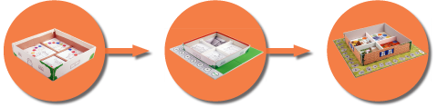

AKTUELLE NEWS
Besuch der weltweit größten Messe- und Event-Highlight
für interaktive Spiele und Unterhaltung.
(21.08.2012)
Preisverleihung des European Games Award 2012 in Köln.
(14.08.2012)
Teilnahme an der Veranstaltung des FFF Bayern und der Kanzlei SKW Schwarz.
(15.06.2012)
- Turbo Tools
- Das Spoings-Haus
- Mighty Monsters
- Grid Occupation
- History-Scanners
Das Spoings-Haus
Spielbeschreibung
»Die Spoings Samy und Bo haben ein wildes Chaos im Haus angerichtet. Hilf den Beiden beim Aufräumen bevor Frau Adar nach Hause kommt!«
Das Spoings-Haus ist ein Brettspiel für Kinder ab 3 Jahren und kann von 2 bis 4 Spielern gespielt werden.
Jeder Spieler bewegt der Reihe nach mit Hilfe eines Farbwürfels seine Spoings-Figur und räumt die Gegenstände in die richtigen Räume zurück. Für jeden richtig aufgeräumten Gegenstand erhält der Spieler einen Belohnungspunkt. Der Spieler mit den meisten Punkten hat gewonnen.
Features
- Kinder fördern und fordern
- altersgerechtes Spielen mit Lerneffekt
- Regeln anpassbar auf den Entwicklungsstand des Kindes
- Vielzahl von Erweiterungen
Screenshots
{kind=link}
{kind=link}
{kind=link}
{kind=link}
Persönliches Aufgabenfeld
Leitung des Brettspiel-Teams
Das Spoings-Team wurde nach den Aufgabenfeldern eingeteilt. Die Leitung des Brettspiel-Teams wurde für die Dauer eines Semesters von mir übernommen.
Zu den Aufgaben gehörten: Führung, Leitung der Umsetzung des Prototypen, Zeit- und Ressourcenpläne, Transparenz und Kommunikation innerhalb des Brettspiel-Teams und zum restlichen Spoings-Team, begleitende und abschliessende Präsentationen.
Konzeption der Spielregeln
Die Erarbeitung der finalen Spielregeln war ein kooperativer Prozess zwischen Suzanne Schanda und mir.
Als nächster Schritt wird eine Testphase mit der Zielgruppe geplant.
Umsetzung der Prototypen
Während dem gesamten Projektverlaufs sind 3 Prototypen, einschliesslich des finalen Prototypens, entstanden. Recherche, Materialtests und Bau wurden von mir durchgeführt.
